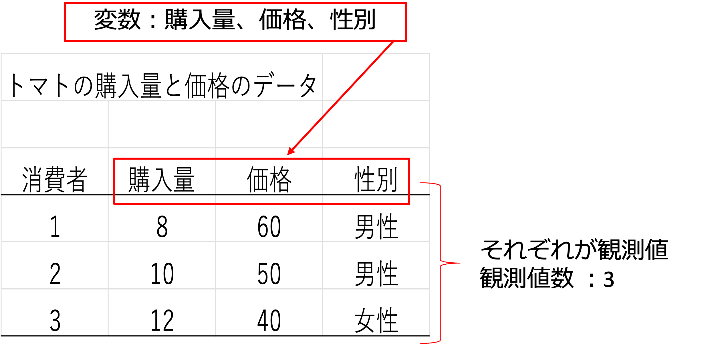
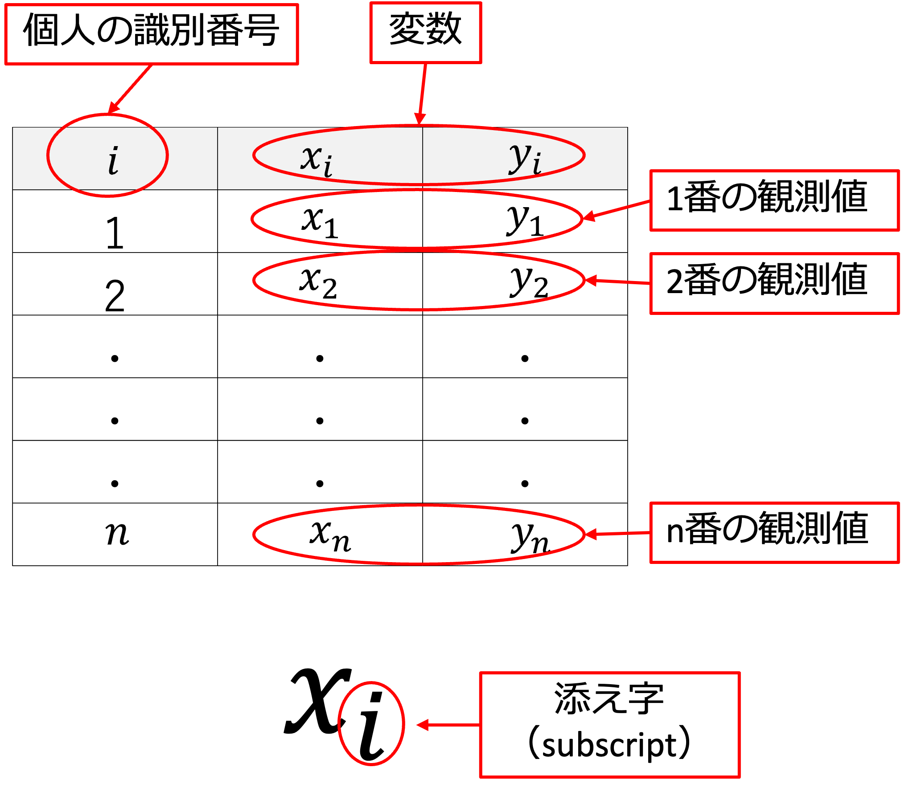
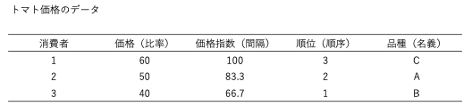
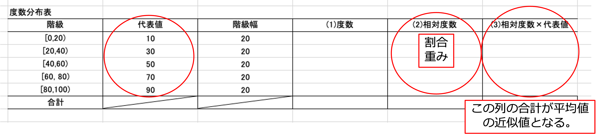

2 データの種類と代表する値
2.1 データの表しかた
- 目的を持って収集された情報の集合のことをデータと呼びます。
- データは、統計表と呼ばれる表の形にまとめられています。
- データは観測対象の情報から構成され、観測された項目を変数（variable）と呼びます。
- 各観測対象について観測された値を、観測値（observation）と呼びます。
- 観測値の数を観測値数（number of observation）と呼びます。
例えば、トマトを購入した3人のデータを見てみましょう。

このようなデータを経済学では以下のように表すことが通例です。

2.2 変数の種類
- 連続型変数（continuous variable）
- 連続的な数字を取る変数
例：長さ、重さ
- 連続的な数字を取る変数
- 離散型変数（discrete variable）
- 整数など決められた値だけを取る変数
例：年齢、さいころの目
- 整数など決められた値だけを取る変数
- 質的変数
- 本来、数字で表せない情報を示す変数
例：性別、好きな色
- 本来、数字で表せない情報を示す変数
2.3 量的変数の尺度
- 量的変数：比率尺度
- 数の比が意味を持つ数
- 加減乗除の計算ができる
- 0は対象が存在しないことを意味する
例：金額、数量
- 数の比が意味を持つ数
- 量的変数：間隔尺度
- 数字の間隔が意味を持つ
- 加減の計算が意味を持つ
- 0が対象の存在しないことを意味しない
例：温度
- 数字の間隔が意味を持つ
2.4 質的変数の尺度
- 質的変数：順序尺度
- 順序を示す数値
- 大小関係に意味がある
- 加減乗除に意味がない
例：徒競走の順位
- 順序を示す数値
- 質的変数：名義尺度
- 観測対象の情報を示している数字
- 数の大小には意味がないことが多い
- 加減乗除には意味がない
例：学籍番号
- 観測対象の情報を示している数字
2.5 尺度の変換
「比率尺度 → 間隔尺度 → 順序尺度 → 名義尺度」の順に変換できる。

2.6 観測値から見たデータの種類
データの取得方法により、大きく3つの種類に分けることができます。
- 横断面データ（cross-section data）
- 同一時点に数多くの観測対象を観測したデータ
例：ある年の各都道府県の人口
- 同一時点に数多くの観測対象を観測したデータ
- 時系列データ（time series data）
- 同一観測対象を異なる時点で観測したデータ
例：ある県の2000年から2025年までの人口
- 同一観測対象を異なる時点で観測したデータ
- パネルデータ（panel data）
- 異なる時点で数多くの観測対象を観測したデータ
例：2000年から2025年までの各都道府県の人口
- 異なる時点で数多くの観測対象を観測したデータ
2.7 代表値
データの特徴を知るために計算される値のことを統計量と呼びます。 データの特徴を知る際のポイントとして、中心の値の大きさ、中心の値からのばらつきの大きさがあります。
- 中心の値
- 平均
- 加重平均
- 中央値
- 最頻値
- 平均
- ばらつきの値（次の章（週）に扱います）
- 分散
- 標準偏差
- 分散

平均（average, mean）
データの中心の位置を知るための尺度としてもっと使用されています。
観測値 \((𝑥_1, 𝑥_2, 𝑥_3, \cdots , 𝑥_𝑛)\) を合計し、観測値の数 \((n)\) で割ったもの。
- 平均値（average, mean）
\[ \begin{aligned} \bar{x} &= \frac{1}{n}(x_1 + x_2 + x_3 + \cdots + x_n) \\[15pt] &= \frac{1}{n} \sum_{i=1}^{n} x_i \end{aligned} \]
加重平均（weighted average）
平均値の式は展開すると次のように書けます。 \[ \begin{aligned} \bar{x} &=\frac{1}{n} (𝑥_1+𝑥_2+𝑥_3+\cdots+𝑥_𝑛 ) \\[15pt] &=\frac{1}{n}𝑥_1+\frac{1}{n}𝑥_2+\frac{1}{n}𝑥_3+ \cdots + \frac{1}{n}𝑥_𝑛 \end{aligned} \]
これは各 \(𝑥_𝑖\) に共通の値 \(\frac{1}{n}\) が乗じられています。 この \(\frac{1}{n}\) のことを重み（weight）と呼びます
平均の場合には重みは一定ですが、この重みの値を各 \(𝑥_𝑖\) ごとに変えたものが加重平均です。
\(𝑖\) 番目の観測値の重みを \(𝑤_𝑖\) で表すと、加重平均（weighted average）は次のように示される。 \[ \begin{aligned} \bar{x} &=𝑤_1 𝑥_1+𝑤_2 𝑥_2+ 𝑤_3 𝑥_3+ \cdots + 𝑤_𝑛 𝑥_𝑛 \\[15pt] &=\sum_{i=1}^n 𝑤_𝑖 𝑥_𝑖 \end{aligned} \]
加重平均の例：GPAの計算（1）
GPA（Grade Point Average）は加重平均と考えられます。
S を4点、A を3点、B を2点、C を1点、F を0点とした場合の、S、A、B、C、F の平均点として計算されます。つまり、\(n\) を1単位と考え、重み（単位割合）をつけて平均を計算しています。各成績の割合が等しければ単純に、4点、3点、2点、1点、0点の平均となり、GPAは2.0となります。
\[\text{Sの割合} \times 4 + \text{Aの割合} \times 3 + \text{Bの割合} \times 2 + \text{Cの割合} \times 1 + \text{Fの割合} \times 0\]
\[\frac{\text{Sの単位数}}{\text{全単位数}} \times 4 + \frac{\text{Aの単位数}}{\text{全単位数}} \times 3 + \frac{\text{Bの単位数}}{\text{全単位数}} \times 2 + \frac{\text{Cの単位数}}{\text{全単位数}} \times 1 + \frac{\text{Fの単位数}}{\text{全単位数}} \times 0\]
\[\frac{\text{Sの単位数} \times 4 + \text{Aの単位数} \times 3 + \text{Bの単位数} \times 2 + \text{Cの単位数} \times 1 + \text{Fの単位数} \times 0}{\text{全単位数}}\]
加重平均の例：GPAの計算（2）
S：5単位、A：5単位、B：5単位、C：5単位、F：5単位の場合
\[ \frac{5}{25} \times 4\text{点} + \frac{5}{25} \times 3\text{点} + \frac{5}{25} \times 2\text{点} + \frac{5}{25} \times 1\text{点} + \frac{5}{25} \times 0\text{点} \]
\[\frac{5 \times 4\text{点} + 5 \times 3\text{点} + 5 \times 2\text{点} + 5 \times 1\text{点} + 5 \times 0\text{点} }{25}\]
\[\frac{4\text{点} + 3\text{点} + 2\text{点} + 1\text{点} + 0\text{点}}{5} = 2.0\]
加重平均の例：GPAの計算（3）
S：5単位、A：15単位、B：23単位、C：5単位、F：2単位の場合
\[\frac{5}{50} \times 4\text{点} + \frac{15}{50} \times 3\text{点} + \frac{23}{50} \times 2\text{点} + \frac{5}{50} \times 1\text{点} + \frac{2}{50} \times 0\text{点}\]
\[\frac{5 \times 4\text{点} + 15 \times 3\text{点} + 22 \times 3\text{点} + 5 \times 1\text{点} + 2 \times 0\text{点}}{50}=2.32\]
相対度数分布表からの平均値
平均値は相対度数分布表からも計算（近似）できます。
（相対度数（割合・重み）×代表値）の合計

2.7.1 中央値（median）
歪んだ分布では、平均値が分布の代表値を示しているとは限りません。平均値とともに、真ん中の値が使われます。
中央値（median）
観測値の数が奇数の場合 → 真ん中の値が中央値 \[Med = x_{\frac{n+1}{2}}\]観測値の数が偶数の場合 → 真ん中の2つの値の平均 \[Med = \frac{x_{\frac{n}{2}} + x_{\frac{n}{2}+1}}{2}\]
最頻値（mode）
- 度数分布表において、最も多くの度数を含む階級を代表する値
- 最も多くの度数を含む階級が複数ある場合には、最頻値を求めることはできません。
2.8 平均値と中央値と最頻値の違い
中心を表すそれぞれの指標の最も特徴的な違いは、外れ値の影響をどのくらい受けるかです。
- あるデータに外れ値が加わった場合、平均値は三つの指標の中で最も影響を受けます。
- 中央値（メジアン）は、データを並べてちょうど真ん中にくる値なので、外れ値が増えても、多くの場合はそれほど影響は受けません。
- 最頻値（モード）は最も頻度の高い数値となるので、外れ値の影響はまず受けません。
データの分布に歪みがあると、平均値、中央値、最頻度には違いが生じます。
参考：中心的な傾向を捉える（なるほど統計学園）
2.9 本日の課題
- ファイル「A2_課題」を Blackboard からダウンロードする。
- 本日の課題に取り組む。
- Blackboard から提出する。